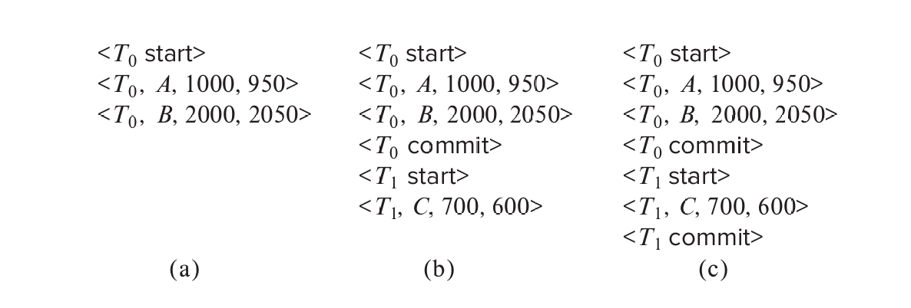
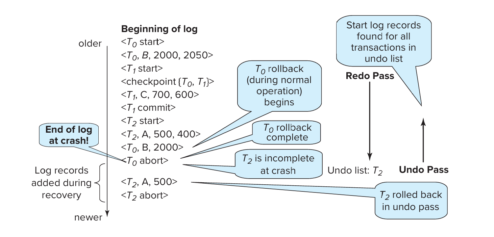
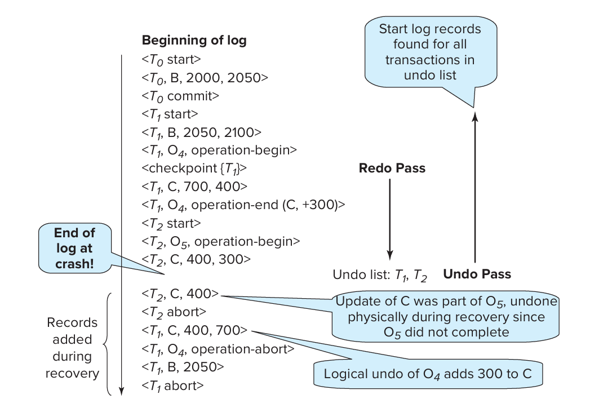
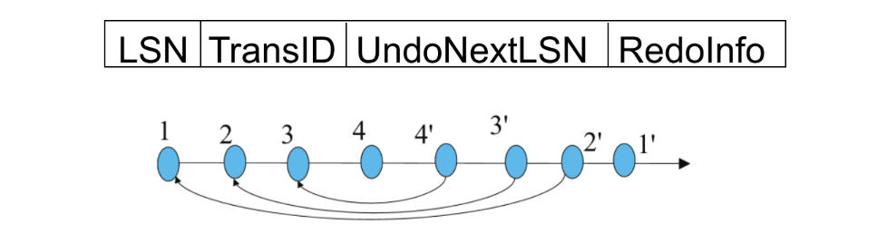

Chapter15 Recovery System
15.1 Basic Concepts
Failure Classification:
-
transaction failure
- 违反约束
-
system crash
- 断电
-
disk failure
- 磁盘损坏
Storage Structure:
- volatile storage: 主存、缓存等易失介质
- nonvolatile storage: 磁盘、磁带、闪存等非易失介质
- stable storage: 永远不会丢失的介质（理想情况，可以通过多重备份无限逼近与模拟）
15.2 Log-Based Recovery
Log:
日志（log） 记录事务对数据库的修改，存储在稳定存储器中。
- 开始：
<Ti,start> - 更新：
<Ti,X,V1,V2> - 提交：
<Ti,commit> - 回滚：
<Ti,abort>
有两种使用日志的方法：
-
immediate database modification
- 事务在提交之前就可以对数据库（buffer或disk）进行修改
- 对于每个更新操作，先写日志再修改数据
- 日志直接记到稳定存储器中
- buffer刷写回磁盘可以在任何时候发生
- buffer被修改和刷写回磁盘的顺序可以不同
-
deferred database modification
- 事务只有在提交时才会对数据库（buffer或disk）进行修改
例如，下图就是一个immediate database modification的例子。$B$在对应事务提交之后刷写回磁盘，而$B_C$在对应事务提交之前刷写回磁盘。

Transaction Commit:
当提交日志写回稳定存储器后，事务就被认为是提交了，之前所有相关日志已经写回稳定存储器。
但事务修改的数据可能还在buffer里，没有刷写回磁盘。
Redo and Undo:
redo指的是从头开始将日志中记录的修改操作重新执行一遍，不会产生新的日志。
undo指的是从最新日志开始，逆向执行日志中记录的修改操作每undo一条日志，都会产生<Ti,X,V>补偿日志（compensate log）。当一个事务undo完成，会产生<Ti,abort>日志。
从故障中恢复时，如果一个事务有开始日志，且有配套的提交日志或回滚日志，则认为该事务已经被完整执行，需要redo。
如果一个事务有开始日志，但没有配套的提交日志或回滚日志，则认为该事务在故障时仍然处于活跃状态，需要undo。
Note
对于那些在故障发生之前有开始日志和回滚日志的事务，我们发现其在恢复时需要redo，虽然相当于什么都没做，称为重复历史（repeating history），但能极大地简化恢复过程。
Example
以下是三个瞬间发生故障时日志的内容，分别应该如何恢复？

(a) undo$T_0$：$B$恢复成2000，$A$恢复成1000，增加新的日志<T0,B,2000>，<T0,A,1000>，<T0,abort>。
(b) redo$T_0$，undo$T_1$：$A$设置成950，$B$设置成2050，$C$恢复成700，增加新的日志<T1,C,700>，<T1,abort>。
(c) redo$T_0$，redo$T_1$：$A$设置成950，$B$设置成2050，$C$设置成600，没有新的日志。
Checkpoint:
如果undo或者redo所有的日志会非常耗时。如果事务对数据的修改已经反映到磁盘上，则无需redo。
检查点的作用是将buffer中所有的日志和脏数据刷写回磁盘（稳定存储器），并向磁盘中写入检查点日志<checkpoint L>，$L$是当时的活跃事务表。
进行检查点相关操作时，所有更新都停止。
Recovery Algorithm:
在引入检查点机制后，恢复算法如下：
正常情况下：记录日志
正常情况下的回滚：undo之前的日志，增加补偿日志和回滚日志
恢复：
-
redo phase:
- 找到最近的检查点
<checkpoint L>，初始化活跃事务表为$L$ - 从检查点开始，redo之后的所有日志
- 如果遇到开始日志
<Ti,start>，则将$T_i$添加到活跃事务表 - 如果遇到提交日志
<Ti,commit>或回滚日志<Ti,abort>，则将$T_i$从活跃事务表中删除
- 找到最近的检查点
-
undo phase:
- 从最新日志开始，往回undo所有活跃事务的日志，并添加补偿日志
- 如果遇到开始日志
<Ti,start>且$T_i$在活跃事务表中，则添加回滚日志<Ti,abort>，并将$T_i$从活跃事务表中删除 - 直到活跃事务表清空
Example

15.3 Buffer Management
现在，情况更加复杂，数据和日志既可以在buffer中，也可以在磁盘中，总共有四种情况。
Log Record Buffering:
日志在内存中有自己的buffer，与之前日志直接写入磁盘不同，只有buffer block满了或者有强制操作（log force），才会将日志刷写回磁盘。
所谓的强制操作，就是当一个事务提交时，必须将该事务的所有日志（包括提交日志）写入磁盘。
如果日志有自己的buffer，需要遵循以下规则：
- 日志从buffer刷写回磁盘的顺序必须与日志生成的顺序一致
- 只有
<Ti,commit>写回磁盘，才意味着事务$T_i$已经提交 - 如果有脏的data buffer需要刷写回磁盘，则必须先将所有相关的日志（操作这个data block的）先刷写回磁盘（write-ahead logging, WAL）
Database Buffering:
数据库的buffer写回磁盘有三种策略：
- force policy: 事务提交时，数据和日志必须同时写入磁盘。
- no-force policy: 事务提交时，只要日志写入磁盘就可以了，数据不需要立即跟随着写入。
- steal policy: 事务没提交之前，就可以将数据写回磁盘。
如果数据想要在事务提交之前写回磁盘，需要先生成undo日志写回磁盘，但并不执行。
Fuzzy Checkpointing:
一般的检查点会导致其他事务的长时间阻塞，并且IO负担很重。
模糊检查点只会要求事务短暂地停一下，只将所有buffer中的日志写回磁盘（还有<checkpoint L>），而对于脏数据则在之后慢慢刷写入磁盘。此时，检查点并不是一个瞬间，而是一个过程。
比如，对于数据buffer中要在检查点写回磁盘的几块，每一块都进行标记，写回一块就打一个勾，直到所有块都打勾为止，表示检查点完成。
这个时候我们发现，有些检查点是无效的，因为其表示的只是开始刷写，而不是刷写完成。数据库系统会维护一个last_checkpoint，表示最新一个刷写完成的检查点。
15.4 Recovery with Early Release and Logical Undo Operations
Logical Undo Logging:
诸如B+树的插入、删除等操作会很快释放锁，很难通过physical undo进行撤销，因为一旦释放锁，其他的事务可能很快接着修改了数据项的值。但如果使用logical undo，那么插入的undo操作就变成删除，删除的undo操作就变成插入，只需要记住操作是什么，而不需要记住最后的结果是什么。
再举一个更简单的例子：对于一个更新<T1,A,200,300>，在原本的physical undo中，恢复一定要保证最后的A值回到200；但在logical undo中，上述更新可能表示的是A的200加上了100后变成了300，那么undo时直接将A的值减去100，而不用在意结果是多少。这种情况下，可以提前释放锁，因为只要记得操作就行。
Note
在physical undo中，我们记录的是数据项在更新前的实际值（“before image”），以便在事务出错或中止时能将数据恢复到其原始状态。这一做法的关键在于数据项的物理值必须保持不变，直到事务最终决定提交或回滚。
如果在physical undo的场景下提前释放锁，就可能允许其他事务访问或修改该数据项，从而改变了该数据项的当前物理值。这样一来，当需要进行回滚时，直接将数据恢复为之前记录的“before image”就无法保证数据的一致性，因为记录中的旧值已经不再反映数据在物理上的真实状态。
Operation Logging:
在logical undo中，当一个操作开始时，记录日志<Ti,Oj,operation-begin>，其中$O_j$是该操作实例的唯一标识符。
当这个操作在执行时，正常地记录日志，记录physical undo和physical redo的信息，就像之前一样。
当这个操作结束时，记录日志<Ti,Oj,operation-end,U>。其中$U$保存着logical undo的信息。
例如：

如果数据库故障或者事务回滚发生在操作完成之前，则使用physical undo；否则，使用logical undo，忽略<Ti,Oj,operation-begin>和<Ti,Oj,operation-end,U>之间的所有日志，并生成日志<Ti,Oj,operation-abort>。
Example

Example

15.5 ARIES Recovery Algorithm
Physiological Redo:
ARIES使用physiological redo来恢复数据。
例如，当表中的一条记录被删除，其他记录移动来填补空缺时，使用传统的physical redo要求记录该page的完整的前后状态，但physiological redo只需要记录删除操作的日志以及“删除”这个操作即可。
ARIES Data Structures:
- log sequence number (LSN)：日志的编号，顺序递增
- pageLSN
- log record
- dirty page table
PageLSN:
在buffer或磁盘中，每一个数据页都包含一个pageLSN，表示最近一次修改该页的日志的LSN。
pageLSN的作用是减少恢复过程中重复的redo操作。
Log Record:

每条日志会记录同一事务中的前一条日志的LSN。
当正常执行时遇到回滚，会记录下特殊的回滚日志，称为compensation log record (CLR)，其中包含对应的回滚操作，其还记录着遇到故障在undo阶段下一条（更早一条）需要被undo的日志（如下图箭头所示）。

Dirty Page Table:
dirty page table记录了buffer的数据页中哪些是脏的，具体来说包含：
- 脏页的pageLSN
- recLSN：表示该条日志之前的日志对该页的修改操作已经刷写回磁盘
当buffer中的某个数据页被更新变脏后，其会被加入dirty page table（如果不在里面），并将当前日志的LSN作为recLSN。
Example:
我们以下图为例进行说明：

磁盘中编号为4894的数据页，其pageLSN为4566，说明该页的内容是第4566号日志修改后的结果，该日志之后的操作还没有反映到这一页。
我们再看buffer中与之对应的数据页，编号也为4894，但其pageLSN为7567，说明该页的内容是第7567号日志修改后的结果，这也说明从第4566号日志之后到第7567号日志都只对buffer中的对应页进行了修改，而没有刷写到磁盘上。
Note
如果buffer中的数据页和磁盘中的数据页对应同一页，则buffer中的pageLSN一般晚于磁盘中的pageLSN。
我们可以看看第7567号日志的内容，这个日志还放在log buffer中，具体内容为<T145,4894.1,40,60>，是第145号事务修改编号为4894的数据页的第1个数据项，将其从40修改为60。
通过比较buffer和磁盘中的数据页，我们可以发现只有编号为9923的数据页的pageLSN是相同的，说明该页的内容已经刷写到磁盘上了，剩下两页是脏的，其也反映在了dirty page table中。
我们就编号为4894的数据页进行完整说明：首先，在磁盘对应页刷新之前，最后一次对该页的修改是第4566号日志，反映在磁盘页的pageLSN中；然后，一直到第7564号日志，才再次对该页进行修改，这个时候buffer变脏，被记录到dirty page table中，同时记下recLSN为7564；然后该页的buffer又被修改若干次但没有写回磁盘，最新一次修改的LSN为7567，反映在buffer页的pageLSN中。
Checkpoint Log:
ARIES的检查点日志包含：
- dirty page table
- 活跃事务表，包括当前每个活跃事务的最新日志（lastLSN）
ARIES使用的是fuzzy checkpointing，因此脏页在起始检查点并没有立刻刷写到磁盘。
Recovery: 3 Passes:
-
analysis pass：
- 找到哪些事务要undo
- 找到哪些页在出现故障时是脏的
- 找到redo的起点（redoLSN）
-
redo pass：
- 从redoLSN开始，redo所有日志
- recLSN和pageLSN用来减少冗余redo
-
undo pass：
- undo所有活跃事务的日志

第一阶段：Analysis Pass
从最近一个完整结束的检查点开始分析，从日志中读出当时的dirty page table，设置redoLSN为dirty page table中所有页的recLSN的最小值。（如果当时没有脏页，则redo的起点就是该检查点）
初始化undo-list为当时的活跃事务表，并读出当时每个活跃事务的lastLSN。
从检查点开始一直分析到故障瞬间，不断更新dirty page table和undo-list，得到崩溃瞬间的最新的dirty page table和undo-list。
当分析到一条更新相关的日志，如果对应的数据页不在dirty page table中，则将其添加到dirty page table中，并设置recLSN为该日志的LSN。
当分析到一条日志，其对应的事务不在undo-list中，则将其添加到undo-list中。
当分析到一条提交日志或回滚日志时，如果对应的事务在undo-list中，则将其从undo-list中删除。
同样，还要记录undo-list中每个事务的LastLSN，之后的undo会用到。
综上：analysis pass得到三个最重要的结果：
- redoLSN
- 发生故障时的dirty page table中每个脏页的recLSN。
- 发生故障时的undo-list。
第二阶段：Redo Pass
从redoLSN开始，对于每一个执行更新相关操作的日志进行判断：
- 如果日志操作的页不在dirty page table中，则跳过；
- 如果日志的LSN小于该页的recLSN，则跳过；
- 否则，读出磁盘对应页，如果读出来的页的pageLSN小于日志的LSN，则说明该日志的更新还没有反映到磁盘上，需要redo；否则不用redo。
Note
第一个跳过的原因：
由于analysis pass中dirty page table只增不减，因此只要最后不在dirty page table中，就说明该页在检查点时就没有被修改过，因此不需要redo。
第二个跳过的原因：
recLSN的定义就表明了在这之前的所有日志操作都已经刷写回磁盘。
第三个跳过的原因：
如果读出来的页的pageLSN大于等于日志的LSN，pageLSN对应的日志已经反映到磁盘上了，那更早的日志就更不用说了。
第三阶段：Undo Pass
从后往前undo所有活跃事务（undo-list）的日志。
优化可以如下操作：
- 定义新的结构nextLSN，表示每一个活跃事务下一个要undo的日志的LSN，初始化为undo-list中每个事务的LastLSN
- 在undo的每一步，挑选nextLSN中最大的LSN对应的日志进行
-
在undo一条日志之后：
- 对于普通日志，将该日志所在事务的nextLSN更新为该日志的prevLSN（已经记录在日志中）
- 对于CLR，将该日志所在事务的nextLSN更新为该日志的undonextLSN（也已经记录在日志中）
其他和原来的算法一样，直到undo-list清空。
Example